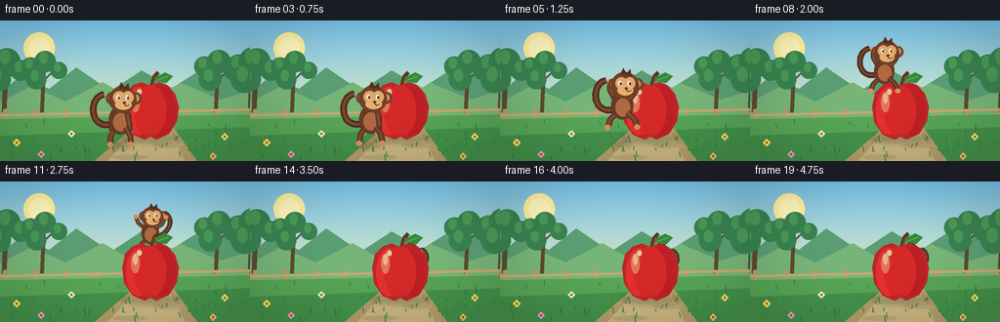
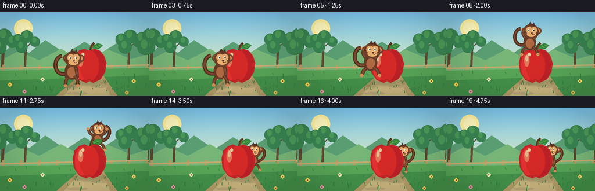
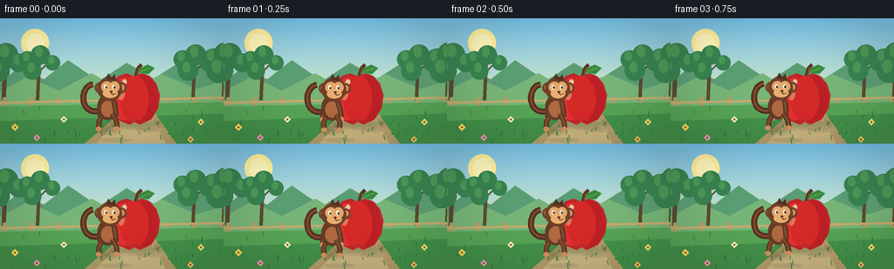

CODING AGENTS AS PIXEL WORLD MODELS
traex/GPT-5.6-Sol · dynamic_spatial_relationship_0062
点击播放 · 原生 RGB 像素
逐轮保存的候选
回放视频、检查图与代码变化。
每份候选均可单独播放。实际图片检查记录在下方工具轨迹中。
候选 01播放与检查图
点击播放 · 原生 RGB 像素

展开代码变化
--- 上一保存版本
+++ 本次保存版本
@@ -0,0 +1,227 @@
+from pathlib import Path
+import json, math
+import numpy as np
+from PIL import Image, ImageDraw, ImageFilter
+import artifact_io
+
+ROOT = Path(__file__).resolve().parent
+SPEC = json.loads((ROOT / 'task_spec.json').read_text())
+W, H, N = SPEC['width'], SPEC['height'], SPEC['frames']
+SS = 3
+
+def sc(v): return int(round(v * SS))
+def pts(seq): return [(sc(x), sc(y)) for x, y in seq]
+def smooth(t):
+ t = max(0.0, min(1.0, t)); return t*t*(3-2*t)
+def mix(a,b,t): return a+(b-a)*t
+
+def ellipse(d, box, fill, outline=None, width=1):
+ d.ellipse(tuple(sc(v) for v in box), fill=fill, outline=outline, width=sc(width))
+def line(d, xy, fill, width=1, joint='curve'):
+ d.line(pts(xy), fill=fill, width=sc(width), joint=joint)
+def polygon(d, xy, fill, outline=None): d.polygon(pts(xy), fill=fill, outline=outline)
+
+def bezier(p0,p1,p2,p3, steps=24):
+ out=[]
+ for u in np.linspace(0,1,steps):
+ v=1-u
+ out.append((v**3*p0[0]+3*v*v*u*p1[0]+3*v*u*u*p2[0]+u**3*p3[0],
+ v**3*p0[1]+3*v*v*u*p1[1]+3*v*u*u*p2[1]+u**3*p3[1]))
+ return out
+
+def make_background(frame):
+ # warm orchard sky gradient
+ yy = np.arange(H*SS)[:,None]
+ top=np.array([119,194,233.]); bot=np.array([235,239,190.])
+ q=np.clip(yy/(H*SS*.78),0,1)[:,:,None]
+ arr=(top*(1-q)+bot*q)
+ arr=np.repeat(arr,W*SS,axis=1).astype(np.uint8)
+ im=Image.fromarray(arr,'RGB'); d=ImageDraw.Draw(im)
+ # sun and haze
+ ellipse(d,(24,12,56,44),(255,240,157))
+ ellipse(d,(29,17,51,39),(255,247,188))
+ # far hills
+ polygon(d,[(-5,78),(22,56),(50,70),(78,48),(113,72),(145,51),(176,69),(211,47),(261,70),(261,106),(-5,106)],(91,157,115))
+ polygon(d,[(-5,86),(32,67),(67,83),(105,63),(143,85),(185,64),(226,81),(261,70),(261,111),(-5,111)],(119,180,119))
+ # orchard silhouettes, intentionally no red fruit to preserve apple salience
+ for x,s in [(-4,.72),(35,.58),(213,.64),(248,.78)]:
+ line(d,[(x+8,94),(x+10,48)],(91,75,48),max(3,int(7*s)))
+ line(d,[(x+9,66),(x-4,53)],(91,75,48),max(2,int(4*s)))
+ line(d,[(x+9,62),(x+23,48)],(91,75,48),max(2,int(4*s)))
+ for ox,oy,r in [(-4,47,16),(11,42,19),(25,51,15),(2,60,18)]:
+ ellipse(d,(x+ox-r*s,oy-r*s,x+ox+r*s,oy+r*s),(57,130,80))
+ ellipse(d,(x+ox-r*s*.55,oy-r*s*.9,x+ox+r*s*.25,oy+r*s*.2),(75,153,88))
+ # distant fence
+ for x in range(3,260,31):
+ polygon(d,[(x,91),(x+4,90),(x+4,112),(x,112)],(183,157,100))
+ line(d,[(-3,97),(259,91)],(195,170,111),3)
+ line(d,[(-3,106),(259,101)],(171,146,93),3)
+ # grass foreground gradient bands
+ polygon(d,[(-3,101),(259,96),(259,147),(-3,147)],(87,164,86))
+ polygon(d,[(-3,118),(259,109),(259,147),(-3,147)],(68,145,74))
+ # perspective path behind and under hero objects
+ polygon(d,[(157,92),(165,92),(204,147),(93,147)],(179,157,105))
+ polygon(d,[(159,92),(163,92),(191,147),(107,147)],(201,181,127))
+ # path stones
+ for x,y,rx in [(159,101,7),(156,113,10),(171,128,15),(133,140,18)]:
+ ellipse(d,(x-rx,y-2.5,x+rx,y+2.5),(185,166,119))
+ # grasses and flowers
+ rng=np.random.default_rng(621)
+ for _ in range(55):
+ x=float(rng.uniform(0,W)); y=float(rng.uniform(106,H)); hh=float(rng.uniform(2,7))
+ col=(47,119+int(rng.integers(0,25)),63)
+ line(d,[(x,y),(x+rng.uniform(-2,2),y-hh)],col,1)
+ for x,y,c in [(17,125,(255,221,88)),(230,119,(244,226,111)),(42,137,(239,158,181)),(218,139,(236,196,94)),(73,116,(238,237,188))]:
+ line(d,[(x,y+4),(x,y)],(52,119,57),1)
+ for a in range(0,360,90):
+ ellipse(d,(x+math.cos(math.radians(a))*2-1.5,y+math.sin(math.radians(a))*2-1.5,
+ x+math.cos(math.radians(a))*2+1.5,y+math.sin(math.radians(a))*2+1.5),c)
+ ellipse(d,(x-1,y-1,x+1,y+1),(127,91,39))
+ return im
+
+def shadow_layer(cx,cy,rx,ry,alpha=80):
+ lay=Image.new('RGBA',(W*SS,H*SS),(0,0,0,0)); d=ImageDraw.Draw(lay)
+ ellipse(d,(cx-rx,cy-ry,cx+rx,cy+ry),(27,63,32,alpha))
+ return lay.filter(ImageFilter.GaussianBlur(sc(2.2)))
+
+def draw_apple(frame, wobble=0):
+ lay=Image.new('RGBA',(W*SS,H*SS),(0,0,0,0)); d=ImageDraw.Draw(lay)
+ cx=154; cy=91+wobble
+ # stem and leaf behind fruit
+ line(d,[(cx+1,68+wobble),(cx+4,57+wobble),(cx+8,53+wobble)],(91,55,30,255),4)
+ line(d,[(cx+2,68+wobble),(cx+5,57+wobble)],(143,89,42,255),1)
+ polygon(d,[(cx+5,58+wobble),(cx+15,53+wobble),(cx+23,57+wobble),(cx+16,64+wobble),(cx+6,62+wobble)],(54,137,62,255))
+ line(d,[(cx+7,61+wobble),(cx+18,57+wobble)],(116,184,80,255),1)
+ # lobed silhouette
+ polygon(d,[(154,67+wobble),(145,63+wobble),(136,66+wobble),(128,74+wobble),(125,88+wobble),
+ (127,104+wobble),(136,117+wobble),(148,122+wobble),(154,119+wobble),(160,122+wobble),
+ (173,116+wobble),(181,103+wobble),(183,88+wobble),(179,75+wobble),(171,66+wobble),(162,63+wobble)],(193,37,39,255))
+ # soft red shaping
+ ellipse(d,(129,68+wobble,155,117+wobble),(224,49,48,255))
+ ellipse(d,(151,66+wobble,180,118+wobble),(187,32,38,255))
+ ellipse(d,(137,66+wobble,170,119+wobble),(213,41,40,255))
+ # blush and highlights
+ ellipse(d,(134,73+wobble,143,94+wobble),(247,103,82,210))
+ ellipse(d,(136,74+wobble,141,85+wobble),(255,183,144,220))
+ ellipse(d,(140,70+wobble,145,76+wobble),(255,209,166,210))
+ # bottom dimple and contour
+ line(d,[(149,118+wobble),(154,116+wobble),(160,119+wobble)],(139,28,34,220),1)
+ return lay
+
+def limb(draw, origin, angle, l1, l2, bend, scale, hand=True):
+ x,y=origin
+ a=angle; b=angle+bend
+ p1=(x+math.cos(a)*l1*scale,y+math.sin(a)*l1*scale)
+ p2=(p1[0]+math.cos(b)*l2*scale,p1[1]+math.sin(b)*l2*scale)
+ line(draw,[origin,p1,p2],(91,52,35,255),max(4,int(6*scale)))
+ line(draw,[origin,p1,p2],(126,75,46,255),max(2,int(3*scale)))
+ if hand: ellipse(draw,(p2[0]-3*scale,p2[1]-2.6*scale,p2[0]+3*scale,p2[1]+2.6*scale),(211,145,91,255))
+ return p2
+
+def draw_monkey(cx, feet_y, scale, phase, airborne, behind=False):
+ lay=Image.new('RGBA',(W*SS,H*SS),(0,0,0,0)); d=ImageDraw.Draw(lay)
+ # pose anchors
+ body=(cx, feet_y-23*scale); head=(cx+2*scale, feet_y-43*scale)
+ # sweeping curled tail (silhouette is highly monkey-readable)
+ if behind:
+ tail=bezier((cx-8*scale,feet_y-19*scale),(cx+25*scale,feet_y-12*scale),(cx+32*scale,feet_y-43*scale),(cx+17*scale,feet_y-48*scale))
+ else:
+ tail=bezier((cx-8*scale,feet_y-19*scale),(cx-31*scale,feet_y-13*scale),(cx-31*scale,feet_y-46*scale),(cx-16*scale,feet_y-48*scale))
+ line(d,tail,(79,45,31,255),max(5,int(7*scale)))
+ line(d,tail,(124,71,43,255),max(2,int(3*scale)))
+ # jump poses
+ if airborne:
+ arm_a=-2.25 + .25*math.sin(phase*math.pi*2)
+ arm_b=-.78 - .22*math.sin(phase*math.pi*2)
+ leg_a=2.35; leg_b=.78
+ bend1=.55; bend2=-.55
+ else:
+ bounce=.08*math.sin(phase*math.pi*2)
+ arm_a=1.72+bounce; arm_b=1.38-bounce
+ leg_a=2.05-bounce; leg_b=1.08+bounce
+ bend1=-.18; bend2=.18
+ # far limbs
+ limb(d,(body[0]-7*scale,body[1]-6*scale),arm_a,10,9,bend1,scale)
+ limb(d,(body[0]-5*scale,body[1]+7*scale),leg_a,10,8,-.45,scale)
+ # ears behind head
+ ellipse(d,(head[0]-16*scale,head[1]-7*scale,head[0]-5*scale,head[1]+5*scale),(116,67,43,255))
+ ellipse(d,(head[0]+8*scale,head[1]-7*scale,head[0]+19*scale,head[1]+5*scale),(116,67,43,255))
+ ellipse(d,(head[0]-13.5*scale,head[1]-4.5*scale,head[0]-7.5*scale,head[1]+2*scale),(221,146,101,255))
+ ellipse(d,(head[0]+10.5*scale,head[1]-4.5*scale,head[0]+16.5*scale,head[1]+2*scale),(221,146,101,255))
+ # torso with belly
+ ellipse(d,(body[0]-11*scale,body[1]-14*scale,body[0]+11*scale,body[1]+14*scale),(102,58,38,255))
+ ellipse(d,(body[0]-7*scale,body[1]-7*scale,body[0]+8*scale,body[1]+11*scale),(174,105,66,255))
+ # near limbs
+ limb(d,(body[0]+7*scale,body[1]-6*scale),arm_b,10,9,bend2,scale)
+ limb(d,(body[0]+5*scale,body[1]+7*scale),leg_b,10,8,.45,scale)
+ # head and muzzle
+ ellipse(d,(head[0]-13*scale,head[1]-13*scale,head[0]+14*scale,head[1]+13*scale),(111,64,40,255))
+ # forehead tuft
+ polygon(d,[(head[0]-4*scale,head[1]-11*scale),(head[0]-1*scale,head[1]-17*scale),(head[0]+2*scale,head[1]-12*scale),(head[0]+6*scale,head[1]-16*scale),(head[0]+7*scale,head[1]-9*scale)],(86,48,34,255))
+ # tan face mask
+ ellipse(d,(head[0]-9*scale,head[1]-8*scale,head[0]+3*scale,head[1]+4*scale),(226,166,106,255))
+ ellipse(d,(head[0],head[1]-8*scale,head[0]+11*scale,head[1]+4*scale),(226,166,106,255))
+ ellipse(d,(head[0]-7*scale,head[1],head[0]+9*scale,head[1]+10*scale),(232,174,111,255))
+ # eyes look toward travel/right
+ for ex in (-4.1,4.7):
+ ellipse(d,(head[0]+(ex-1.7)*scale,head[1]-4.5*scale,head[0]+(ex+1.7)*scale,head[1]+.5*scale),(247,242,218,255))
+ ellipse(d,(head[0]+(ex-.1)*scale,head[1]-3.2*scale,head[0]+(ex+1.5)*scale,head[1]-.3*scale),(31,27,24,255))
+ ellipse(d,(head[0]+(ex+.35)*scale,head[1]-2.9*scale,head[0]+(ex+.8)*scale,head[1]-2.2*scale),(255,255,255,255))
+ ellipse(d,(head[0]+.5*scale,head[1]+2*scale,head[0]+3.5*scale,head[1]+4.3*scale),(91,50,37,255))
+ # smile
+ line(d,[(head[0]+2*scale,head[1]+5*scale),(head[0]+4*scale,head[1]+6.4*scale),(head[0]+7*scale,head[1]+5.1*scale)],(100,47,39,255),1)
+ return lay
+
+def frame_at(i):
+ im=make_background(i)
+ # apple's grounded shadow
+ im=Image.alpha_composite(im.convert('RGBA'),shadow_layer(154,121,30,5,70))
+ if i <= 3:
+ cx=123 + .8*math.sin(i*.9); feet=126 + .7*math.sin(i*1.4); size=1.05
+ phase=i/4; airborne=False; depth=0.0
+ elif i == 4:
+ cx=124; feet=129; size=1.04; phase=.5; airborne=False; depth=.05
+ elif i <= 14:
+ p=(i-4)/10
+ e=smooth(p)
+ cx=mix(124,162,e)
+ feet=mix(126,106,e)-48*math.sin(math.pi*p)
+ size=mix(1.04,.76,e)
+ phase=p; airborne=True; depth=e
+ else:
+ p=(i-15)/4
+ cx=162+1.0*math.sin(p*math.pi)*math.exp(-p)
+ feet=106+2.2*math.sin(p*math.pi*3)*math.exp(-2*p)
+ size=.76; phase=p; airborne=False; depth=1.0
+ # oval monkey shadow follows its ground projection; fades at jump apex
+ if i <= 4: groundx,groundy=123,128; elev=0
+ elif i <=14:
+ p=(i-4)/10; groundx=mix(124,162,smooth(p)); groundy=mix(128,108,smooth(p)); elev=math.sin(math.pi*p)
+ else: groundx,groundy=162,108; elev=0
+ sh=shadow_layer(groundx,groundy,12*(1-.4*elev),3*(1-.35*elev),int(75*(1-.55*elev)))
+ im=Image.alpha_composite(im,sh)
+ monkey=draw_monkey(cx,feet,size,phase,airborne,behind=depth>=.55)
+ # apple gives a tiny squash/wobble as monkey lands behind it
+ wobble = (1.3*math.sin((i-13)*2.5)*math.exp(-(i-13)*.5)) if i>=13 else 0
+ apple=draw_apple(i,wobble)
+ if depth < .55: # monkey is in FRONT: it occludes apple
+ im=Image.alpha_composite(im,apple)
+ im=Image.alpha_composite(im,monkey)
+ else: # monkey is BEHIND: apple occludes it
+ im=Image.alpha_composite(im,monkey)
+ im=Image.alpha_composite(im,apple)
+ # subtle cinematic vignette
+ a=np.asarray(im.convert('RGB')).astype(np.float32)
+ yh,xh=np.mgrid[0:H*SS,0:W*SS]
+ dx=(xh-W*SS/2)/(W*SS/2); dy=(yh-H*SS/2)/(H*SS/2)
+ vig=np.clip(1-.10*np.maximum(0,dx*dx+dy*dy-.25),.87,1)[...,None]
+ a=np.clip(a*vig,0,255).astype(np.uint8)
+ out=Image.fromarray(a).resize((W,H),Image.Resampling.LANCZOS)
+ return np.asarray(out,dtype=np.uint8)
+
+def main():
+ frames=np.stack([frame_at(i) for i in range(N)],axis=0)
+ artifact_io.save(frames,ROOT)
+ print('saved',frames.shape,frames.dtype,'range',int(frames.min()),int(frames.max()))
+
+if __name__=='__main__': main()
候选 02播放与检查图
点击播放 · 原生 RGB 像素


展开代码变化
--- 上一保存版本
+++ 本次保存版本
@@ -184,20 +184,20 @@
elif i <= 14:
p=(i-4)/10
e=smooth(p)
- cx=mix(124,162,e)
- feet=mix(126,106,e)-48*math.sin(math.pi*p)
- size=mix(1.04,.76,e)
+ cx=mix(124,179,e)
+ feet=mix(126,109,e)-48*math.sin(math.pi*p)
+ size=mix(1.04,.82,e)
phase=p; airborne=True; depth=e
else:
p=(i-15)/4
- cx=162+1.0*math.sin(p*math.pi)*math.exp(-p)
- feet=106+2.2*math.sin(p*math.pi*3)*math.exp(-2*p)
- size=.76; phase=p; airborne=False; depth=1.0
+ cx=179+1.0*math.sin(p*math.pi)*math.exp(-p)
+ feet=109+2.2*math.sin(p*math.pi*3)*math.exp(-2*p)
+ size=.82; phase=p; airborne=False; depth=1.0
# oval monkey shadow follows its ground projection; fades at jump apex
if i <= 4: groundx,groundy=123,128; elev=0
elif i <=14:
- p=(i-4)/10; groundx=mix(124,162,smooth(p)); groundy=mix(128,108,smooth(p)); elev=math.sin(math.pi*p)
- else: groundx,groundy=162,108; elev=0
+ p=(i-4)/10; groundx=mix(124,179,smooth(p)); groundy=mix(128,111,smooth(p)); elev=math.sin(math.pi*p)
+ else: groundx,groundy=179,111; elev=0
sh=shadow_layer(groundx,groundy,12*(1-.4*elev),3*(1-.35*elev),int(75*(1-.55*elev)))
im=Image.alpha_composite(im,sh)
monkey=draw_monkey(cx,feet,size,phase,airborne,behind=depth>=.55)
可观测工具轨迹
实际执行的命令与返回图片。
命令 1exit 0
/bin/bash -lc "ls -la && printf '\\n--- prompt.txt ---\\n' && cat prompt.txt && printf '\\n--- GENERATION_RULES.md ---\\n' && cat GENERATION_RULES.md && printf '\\n--- task_spec.json ---\\n' && cat task_spec.json"
命令 2exit 0
/bin/bash -lc "find . -maxdepth 2 -type f -printf '%p\\n' | sort"
命令 3exit 0
/bin/bash -lc 'cat artifact_io.py'
命令 4exit 0
/bin/bash -lc "cat > generate.py <<'PY'
from pathlib import Path
import json, math
import numpy as np
from PIL import Image, ImageDraw, ImageFilter
import artifact_io
ROOT = Path(__file__).resolve().parent
SPEC = json.loads((ROOT / 'task_spec.json').read_text())
W, H, N = SPEC['width'], SPEC['height'], SPEC['frames']
SS = 3
def sc(v): return int(round(v * SS))
def pts(seq): return [(sc(x), sc(y)) for x, y in seq]
def smooth(t):
t = max(0.0, min(1.0, t)); return t*t*(3-2*t)
def mix(a,b,t): return a+(b-a)*t
def ellipse(d, box, fill, outline=None, width=1):
d.ellipse(tuple(sc(v) for v in box), fill=fill, outline=outline, width=sc(width))
def line(d, xy, fill, width=1, joint='curve'):
d.line(pts(xy), fill=fill, width=sc(width), joint=joint)
def polygon(d, xy, fill, outline=None): d.polygon(pts(xy), fill=fill, outline=outline)
def bezier(p0,p1,p2,p3, steps=24):
out=[]
for u in np.linspace(0,1,steps):
v=1-u
out.append((v**3*p0[0]+3*v*v*u*p1[0]+3*v*u*u*p2[0]+u**3*p3[0],
v**3*p0[1]+3*v*v*u*p1[1]+3*v*u*u*p2[1]+u**3*p3[1]))
return out
def make_background(frame):
# warm orchard sky gradient
yy = np.arange(H*SS)[:,None]
top=np.array([119,194,233.]); bot=np.array([235,239,190.])
q=np.clip(yy/(H*SS*.78),0,1)[:,:,None]
arr=(top*(1-q)+bot*q)
arr=np.repeat(arr,W*SS,axis=1).astype(np.uint8)
im=Image.fromarray(arr,'RGB'); d=ImageDraw.Draw(im)
# sun and haze
ellipse(d,(24,12,56,44),(255,240,157))
ellipse(d,(29,17,51,39),(255,247,188))
# far hills
polygon(d,[(-5,78),(22,56),(50,70),(78,48),(113,72),(145,51),(176,69),(211,47),(261,70),(261,106),(-5,106)],(91,157,115))
polygon(d,[(-5,86),(32,67),(67,83),(105,63),(143,85),(185,64),(226,81),(261,70),(261,111),(-5,111)],(119,180,119))
# orchard silhouettes, intentionally no red fruit to preserve apple salience
for x,s in [(-4,.72),(35,.58),(213,.64),(248,.78)]:
line(d,[(x+8,94),(x+10,48)],(91,75,48),max(3,int(7*s)))
line(d,[(x+9,66),(x-4,53)],(91,75,48),max(2,int(4*s)))
line(d,[(x+9,62),(x+23,48)],(91,75,48),max(2,int(4*s)))
for ox,oy,r in [(-4,47,16),(11,42,19),(25,51,15),(2,60,18)]:
ellipse(d,(x+ox-r*s,oy-r*s,x+ox+r*s,oy+r*s),(57,130,80))
ellipse(d,(x+ox-r*s*.55,oy-r*s*.9,x+ox+r*s*.25,oy+r*s*.2),(75,153,88))
# distant fence
for x in range(3,260,31):
polygon(d,[(x,91),(x+4,90),(x+4,112),(x,112)],(183,157,100))
line(d,[(-3,97),(259,91)],(195,170,111),3)
line(d,[(-3,106),(259,101)],(171,146,93),3)
# grass foreground gradient bands
polygon(d,[(-3,101),(259,96),(259,147),(-3,147)],(87,164,86))
polygon(d,[(-3,118),(259,109),(259,147),(-3,147)],(68,145,74))
# perspective path behind and under hero objects
polygon(d,[(157,92),(165,92),(204,147),(93,147)],(179,157,105))
polygon(d,[(159,92),(163,92),(191,147),(107,147)],(201,181,127))
# path stones
for x,y,rx in [(159,101,7),(156,113,10),(171,128,15),(133,140,18)]:
ellipse(d,(x-rx,y-2.5,x+rx,y+2.5),(185,166,119))
# grasses and flowers
rng=np.random.default_rng(621)
for _ in range(55):
x=float(rng.uniform(0,W)); y=float(rng.uniform(106,H)); hh=float(rng.uniform(2,7))
col=(47,119+int(rng.integers(0,25)),63)
line(d,[(x,y),(x+rng.uniform(-2,2),y-hh)],col,1)
for x,y,c in [(17,125,(255,221,88)),(230,119,(244,226,111)),(42,137,(239,158,181)),(218,139,(236,196,94)),(73,116,(238,237,188))]:
line(d,[(x,y+4),(x,y)],(52,119,57),1)
for a in range(0,360,90):
ellipse(d,(x+math.cos(math.radians(a))*2-1.5,y+math.sin(math.radians(a))*2-1.5,
x+math.cos(math.radians(a))*2+1.5,y+math.sin(math.radians(a))*2+1.5),c)
ellipse(d,(x-1,y-1,x+1,y+1),(127,91,39))
return im
def shadow_layer(cx,cy,rx,ry,alpha=80):
lay=Image.new('RGBA',(W*SS,H*SS),(0,0,0,0)); d=ImageDraw.Draw(lay)
ellipse(d,(cx-rx,cy-ry,cx+rx,cy+ry),(27,63,32,alpha))
return lay.filter(ImageFilter.GaussianBlur(sc(2.2)))
def draw_apple(frame, wobble=0):
lay=Image.new('RGBA',(W*SS,H*SS),(0,0,0,0)); d=ImageDraw.Draw(lay)
cx=154; cy=91+wobble
# stem and leaf behind fruit
line(d,[(cx+1,68+wobble),(cx+4,57+wobble),(cx+8,53+wobble)],(91,55,30,255),4)
line(d,[(cx+2,68+wobble),(cx+5,57+wobble)],(143,89,42,255),1)
polygon(d,[(cx+5,58+wobble),(cx+15,53+wobble),(cx+23,57+wobble),(cx+16,64+wobble),(cx+6,62+wobble)],(54,137,62,255))
line(d,[(cx+7,61+wobble),(cx+18,57+wobble)],(116,184,80,255),1)
# lobed silhouette
polygon(d,[(154,67+wobble),(145,63+wobble),(136,66+wobble),(128,74+wobble),(125,88+wobble),
(127,104+wobble),(136,117+wobble),(148,122+wobble),(154,119+wobble),(160,122+wobble),
(173,116+wobble),(181,103+wobble),(183,88+wobble),(179,75+wobble),(171,66+wobble),(162,63+wobble)],(193,37,39,255))
# soft red shaping
ellipse(d,(129,68+wobble,155,117+wobble),(224,49,48,255))
ellipse(d,(151,66+wobble,180,118+wobble),(187,32,38,255))
ellipse(d,(137,66+wobble,170,119+wobble),(213,41,40,255))
# blush and highlights
ellipse(d,(134,73+wobble,143,94+wobble),(247,103,82,210))
ellipse(d,(136,74+wobble,141,85+wobble),(255,183,144,220))
ellipse(d,(140,70+wobble,145,76+wobble),(255,209,166,210))
# bottom dimple and contour
line(d,[(149,118+wobble),(154,116+wobble),(160,119+wobble)],(139,28,34,220),1)
return lay
def limb(draw, origin, angle, l1, l2, bend, scale, hand=True):
x,y=origin
a=angle; b=angle+bend
p1=(x+math.cos(a)*l1*scale,y+math.sin(a)*l1*scale)
p2=(p1[0]+math.cos(b)*l2*scale,p1[1]+math.sin(b)*l2*scale)
line(draw,[origin,p1,p2],(91,52,35,255),max(4,int(6*scale)))
line(draw,[origin,p1,p2],(126,75,46,255),max(2,int(3*scale)))
if hand: ellipse(draw,(p2[0]-3*scale,p2[1]-2.6*scale,p2[0]+3*scale,p2[1]+2.6*scale),(211,145,91,255))
return p2
def draw_monkey(cx, feet_y, scale, phase, airborne, behind=False):
lay=Image.new('RGBA',(W*SS,H*SS),(0,0,0,0)); d=ImageDraw.Draw(lay)
# pose anchors
body=(cx, feet_y-23*scale); head=(cx+2*scale, feet_y-43*scale)
# sweeping curled tail (silhouette is highly monkey-readable)
if behind:
tail=bezier((cx-8*scale,feet_y-19*scale),(cx+25*scale,feet_y-12*scale),(cx+32*scale,feet_y-43*scale),(cx+17*scale,feet_y-48*scale))
else:
tail=bezier((cx-8*scale,feet_y-19*scale),(cx-31*scale,feet_y-13*scale),(cx-31*scale,feet_y-46*scale),(cx-16*scale,feet_y-48*scale))
line(d,tail,(79,45,31,255),max(5,int(7*scale)))
line(d,tail,(124,71,43,255),max(2,int(3*scale)))
# jump poses
if airborne:
arm_a=-2.25 + .25*math.sin(phase*math.pi*2)
arm_b=-.78 - .22*math.sin(phase*math.pi*2)
leg_a=2.35; leg_b=.78
bend1=.55; bend2=-.55
else:
bounce=.08*math.sin(phase*math.pi*2)
arm_a=1.72+bounce; arm_b=1.38-bounce
leg_a=2.05-bounce; leg_b=1.08+bounce
bend1=-.18; bend2=.18
# far limbs
limb(d,(body[0]-7*scale,body[1]-6*scale),arm_a,10,9,bend1,scale)
limb(d,(body[0]-5*scale,body[1]+7*scale),leg_a,10,8,-.45,scale)
# ears behind head
ellipse(d,(head[0]-16*scale,head[1]-7*scale,head[0]-5*scale,head[1]+5*scale),(116,67,43,255))
ellipse(d,(head[0]+8*scale,head[1]-7*scale,head[0]+19*scale,head[1]+5*scale),(116,67,43,255))
ellipse(d,(head[0]-13.5*scale,head[1]-4.5*scale,head[0]-7.5*scale,head[1]+2*scale),(221,146,101,255))
ellipse(d,(head[0]+10.5*scale,head[1]-4.5*scale,head[0]+16.5*scale,head[1]+2*scale),(221,146,101,255))
# torso with belly
ellipse(d,(body[0]-11*scale,body[1]-14*scale,body[0]+11*scale,body[1]+14*scale),(102,58,38,255))
ellipse(d,(body[0]-7*scale,body[1]-7*scale,body[0]+8*scale,body[1]+11*scale),(174,105,66,255))
# near limbs
limb(d,(body[0]+7*scale,body[1]-6*scale),arm_b,10,9,bend2,scale)
limb(d,(body[0]+5*scale,body[1]+7*scale),leg_b,10,8,.45,scale)
# head and muzzle
ellipse(d,(head[0]-13*scale,head[1]-13*scale,head[0]+14*scale,head[1]+13*scale),(111,64,40,255))
# forehead tuft
polygon(d,[(head[0]-4*scale,head[1]-11*scale),(head[0]-1*scale,head[1]-17*scale),(head[0]+2*scale,head[1]-12*scale),(head[0]+6*scale,head[1]-16*scale),(head[0]+7*scale,head[1]-9*scale)],(86,48,34,255))
# tan face mask
ellipse(d,(head[0]-9*scale,head[1]-8*scale,head[0]+3*scale,head[1]+4*scale),(226,166,106,255))
ellipse(d,(head[0],head[1]-8*scale,head[0]+11*scale,head[1]+4*scale),(226,166,106,255))
ellipse(d,(head[0]-7*scale,head[1],head[0]+9*scale,head[1]+10*scale),(232,174,111,255))
# eyes look toward travel/right
for ex in (-4.1,4.7):
ellipse(d,(head[0]+(ex-1.7)*scale,head[1]-4.5*scale,head[0]+(ex+1.7)*scale,head[1]+.5*scale),(247,242,218,255))
ellipse(d,(head[0]+(ex-.1)*scale,head[1]-3.2*scale,head[0]+(ex+1.5)*scale,head[1]-.3*scale),(31,27,24,255))
ellipse(d,(head[0]+(ex+.35)*scale,head[1]-2.9*scale,head[0]+(ex+.8)*scale,head[1]-2.2*scale),(255,255,255,255))
ellipse(d,(head[0]+.5*scale,head[1]+2*scale,head[0]+3.5*scale,head[1]+4.3*scale),(91,50,37,255))
# smile
line(d,[(head[0]+2*scale,head[1]+5*scale),(head[0]+4*scale,head[1]+6.4*scale),(head[0]+7*scale,head[1]+5.1*scale)],(100,47,39,255),1)
return lay
def frame_at(i):
im=make_background(i)
# apple's grounded shadow
im=Image.alpha_composite(im.convert('RGBA'),shadow_layer(154,121,30,5,70))
if i <= 3:
cx=123 + .8*math.sin(i*.9); feet=126 + .7*math.sin(i*1.4); size=1.05
phase=i/4; airborne=False; depth=0.0
elif i == 4:
cx=124; feet=129; size=1.04; phase=.5; airborne=False; depth=.05
elif i <= 14:
p=(i-4)/10
e=smooth(p)
cx=mix(124,162,e)
feet=mix(126,106,e)-48*math.sin(math.pi*p)
size=mix(1.04,.76,e)
phase=p; airborne=True; depth=e
else:
p=(i-15)/4
cx=162+1.0*math.sin(p*math.pi)*math.exp(-p)
feet=106+2.2*math.sin(p*math.pi*3)*math.exp(-2*p)
size=.76; phase=p; airborne=False; depth=1.0
# oval monkey shadow follows its ground projection; fades at jump apex
if i <= 4: groundx,groundy=123,128; elev=0
elif i <=14:
p=(i-4)/10; groundx=mix(124,162,smooth(p)); groundy=mix(128,108,smooth(p)); elev=math.sin(math.pi*p)
else: groundx,groundy=162,108; elev=0
sh=shadow_layer(groundx,groundy,12*(1-.4*elev),3*(1-.35*elev),int(75*(1-.55*elev)))
im=Image.alpha_composite(im,sh)
monkey=draw_monkey(cx,feet,size,phase,airborne,behind=depth>=.55)
# apple gives a tiny squash/wobble as monkey lands behind it
wobble = (1.3*math.sin((i-13)*2.5)*math.exp(-(i-13)*.5)) if i>=13 else 0
apple=draw_apple(i,wobble)
if depth < .55: # monkey is in FRONT: it occludes apple
im=Image.alpha_composite(im,apple)
im=Image.alpha_composite(im,monkey)
else: # monkey is BEHIND: apple occludes it
im=Image.alpha_composite(im,monkey)
im=Image.alpha_composite(im,apple)
# subtle cinematic vignette
a=np.asarray(im.convert('RGB')).astype(np.float32)
yh,xh=np.mgrid[0:H*SS,0:W*SS]
dx=(xh-W*SS/2)/(W*SS/2); dy=(yh-H*SS/2)/(H*SS/2)
vig=np.clip(1-.10*np.maximum(0,dx*dx+dy*dy-.25),.87,1)[...,None]
a=np.clip(a*vig,0,255).astype(np.uint8)
out=Image.fromarray(a).resize((W,H),Image.Resampling.LANCZOS)
return np.asarray(out,dtype=np.uint8)
def main():
frames=np.stack([frame_at(i) for i in range(N)],axis=0)
artifact_io.save(frames,ROOT)
print('saved',frames.shape,frames.dtype,'range',int(frames.min()),int(frames.max()))
if __name__=='__main__': main()
PY
python generate.py
ls -lh pixels.npz inspection.png index.html frames/00.png frames/19.png"命令 5exit 0
/bin/bash -lc 'python -m py_compile generate.py'
命令 6exit 0
/bin/bash -lc 'python generate.py'
命令 7exit 0
/bin/bash -lc "python - <<'PY'
import numpy as np, json
from PIL import Image
z=np.load('pixels.npz')['pixels']
s=json.load(open('task_spec.json'))
print('packed', z.shape,z.dtype)
imgs=[]
for i in range(20):
p=z[:,:,i]
a=np.stack([(p>>16)&255,(p>>8)&255,p&255],-1).astype('uint8')
imgs.append(a)
print('decoded',np.stack(imgs).shape,'unique/frame', [len(np.unique(x.reshape(-1,3),axis=0)) for x in imgs[::5]])
print('files',len(list(__import__('pathlib').Path('frames').glob('*.png'))))
PY"保存候选 2 份；完成命令 7 次；可验证图片返回 0 张。原始 API 响应与完整日志保留在本地。